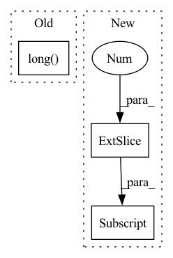

Pattern ID :34570

Before Change
x = x.to(pl_module.device)
with torch.no_grad():
pl_module.eval()
out = pl_module(text, x, return_loss=False).long()
text_seq = out[:, :self.text_seq_len]
img_seq = out[:, -self.image_seq_len:]
xrec = pl_module.vae.decode(img_seq)
pl_module.train()
After Change
x = x.to(pl_module.device)
with torch.no_grad():
pl_module.eval()
out = pl_module(text, x, return_loss=False)[:, -1, :]
text_seq = out[:, :self.text_seq_len]
img_seq = out[:, -self.image_seq_len:]
xrec = pl_module.vae.decode(img_seq)
pl_module.train()
In pattern: SUPERPATTERN
Frequency: 9
Non-data size: 3
Instances
Fragment ID: 99411788
Project Name: tgisaturday/dalle-lightning
Commit Name: f8e968bca7f91e783d1986863dcc8cc1f9876713
Time: 2021-07-26
Author: jamesk1228@gmail.com
File Name: pl_dalle/callbacks.py
M Class Name: DalleImageSampler
N Class Name: DalleImageSampler
M Method Name: on_train_batch_end(7)
N Method Name: on_train_batch_end(7)
M Parent Class: Callback
N Parent Class: Callback
M File Name: pl_dalle/callbacks.py
N File Name: pl_dalle/callbacks.py
M Start Line: 204
M End Line: 208
N Start Line: 204
N End Line: 208
'>
Before Change
indices = torch.randint(0, max_id, (ray_num,)).to(target_device)
output_rgb = rgbs[indices]
sampled_coords = coords[indices]
camera_indices = sampled_coords[:, -1].long()
cam_tfs = tfs[camera_indices]
resolution = (far - near) / point_num
all_lengths = torch.linspace(near, far - resolution, point_num).to(target_device)
lengths = all_lengths + torch.rand((ray_num, point_num)).to(target_device) * resolution
After Change
// return shape (ray_num, point_num, 3), (ray_num, point_num), rgb(ray_num, rgb), cams(ray_num, ray_dir, ray_t)
pts = cam_tf[:, -1] + ray_raw[:, None, :] * lengths[:, :, None]
// ray_raw is of shape (ray_num, 3)
return torch.cat((pts, ray_raw.unsqueeze(-2).repeat(1, point_num, 1)), dim = -1), lengths, output_rgb, torch.cat((cam_tf[:, -1].unsqueeze(0).repeat(ray_raw.shape[0], 1), ray_raw), dim = -1)
def fov2Focal(fov:float, img_width:float) -> float:
return .5 * img_width / np.tan(.5 * fov)
'>
Fragment ID: 99411789
Project Name: enigmatisms/nerf
Commit Name: 926e53d582b75b6d41aa6ffb38432e21706adc6f
Time: 2022-04-14
Author: 984041003@qq.com
File Name: py/utils.py
M Class Name: AnonimousClass
N Class Name: AnonimousClass
M Method Name: validSampler(10)
N Method Name: validSampler(10)
M Parent Class:
N Parent Class:
M File Name: py/utils.py
N File Name: py/utils.py
M Start Line: 73
M End Line: 89
N Start Line: 109
N End Line: 118
'>
Before Change
offset_y = type(self).offset_y(Y.size())
harmonic_smoothing = type(self).harmonic_smoothing(X.size(0)).view([-1,1,1])
variances = (1/harmonic_smoothing) * X.size(1)
filter_sizes = (variances*2+1).long()
dX = torch.empty_like(X)
dY = torch.empty_like(Y)
for n in range(X.size(0)):
sigma, filter_size = variances[n].item(), filter_sizes[n].item()
After Change
sample_offset_y=offset_y[n: n+1, :, :].unsqueeze(dim=1)
sample_offset_x=K.filters.gaussian_blur2d(sample_offset_x, kernel_size=filter_size, sigma=sigma)
sample_offset_y=K.filters.gaussian_blur2d(sample_offset_y, kernel_size=filter_size, sigma=sigma)
dX[n, :, :] = sample_offset_x[0,0,:,:]
dY[n, :, :] = sample_offset_y[0,0,:,:]
//dX[n, :, :] = K.filters.gaussian_blur2d(offset_x[n, :, :], kernel_size=(filter_size, filter_size), sigma=(sigma, sigma))
//dY[n, :, :] = K.filters.gaussian_blur2d(offset_y[n, :, :], kernel_size=(filter_size, filter_size), sigma=(sigma, sigma))
return dX, dY
'>
Fragment ID: 99411790
Project Name: anguelos/tormentor
Commit Name: 8ab4428988cdc409e9e8688889ffbc004286616f
Time: 2020-07-14
Author: anguelos.nicolaou@gmail.com
File Name: tormentor/spatial_augmentations.py
M Class Name: ElasticTransform
N Class Name: ElasticTransform
M Method Name: generate_batch_state(2)
N Method Name: generate_batch_state(2)
M Parent Class: SpatialImageAugmentation
N Parent Class: SpatialImageAugmentation
M File Name: tormentor/spatial_augmentations.py
N File Name: tormentor/spatial_augmentations.py
M Start Line: 183
M End Line: 194
N Start Line: 250
N End Line: 271
'>
Before Change
self.evict_backlist.clear()
// new ids chunk_offset + offset_in_chunk
with record_function("(zhg) embed idx -> cache chunk id"):
mapped_ids = self._id_to_cached_cuda_id(ids).long().view(ids.shape)
return mapped_ids
def _prepare_chunks_on_cuda(self, chunk_ids: List[int]) -> None:
After Change
self.evict_backlist = chunk_id_set
with record_function("(zhg) get cpu chunk indices"):
cpu_chunk_id_list = chunk_id_set[torch.isin(chunk_id_set, self.cached_chunk_table[:, 0],
invert=True)].tolist()
self.num_hits_history.append(len(chunk_id_set) - len(cpu_chunk_id_list))
self.num_miss_history.append(len(cpu_chunk_id_list))
'>
Fragment ID: 99411784
Project Name: hpcaitech/cachedembedding
Commit Name: 5b9995175361069d8eaa507674a59791f722761a
Time: 2022-07-26
Author: 34452939+zxgx@users.noreply.github.com
File Name: recsys/modules/embeddings/chunk_param_mgr.py
M Class Name: ChunkParamMgr
N Class Name: ChunkParamMgr
M Method Name: prepare_ids(2)
N Method Name: prepare_ids(2)
M Parent Class: object
N Parent Class: object
M File Name: recsys/modules/embeddings/chunk_param_mgr.py
N File Name: recsys/modules/embeddings/chunk_param_mgr.py
M Start Line: 167
M End Line: 195
N Start Line: 155
N End Line: 178
'>
Before Change
return dict(priority=self._priority)
def _update_q(self, replay_sample):
action = replay_sample["action"].long()
reward = replay_sample["reward"]
terminal = replay_sample["terminal"].float()
After Change
q_pred = qs_pred[
torch.arange(qs_pred.shape[0]),
action[:, 0].long(),
action[:, 1].long(),
]
self.optimizer.zero_grad()
'>
Fragment ID: 99411800
Project Name: wkentaro/safepicking
Commit Name: fc3929ce815a6b4a9b420365b614a4b3dad1bf8a
Time: 2021-06-11
Author: www.kentaro.wada@gmail.com
File Name: examples/target_pick/agent.py
M Class Name: DqnAgent
N Class Name: DqnAgent
M Method Name: _update_q(2)
N Method Name: _update_q(2)
M Parent Class: Agent
N Parent Class: Agent
M File Name: examples/target_pick/agent.py
N File Name: examples/target_pick/agent.py
M Start Line: 132
M End Line: 164
N Start Line: 167
N End Line: 203
'>
Before Change
// Snap-to-grid
grid = torch.zeros(size=(self.n_pillars_x, self.n_pillars_y, self.out_features))
for i in range(x.shape[0]):
x_idx, y_idx = indices[i].long()
grid[x_idx, y_idx].add(x[i])
return grid
After Change
// Snap-to-grid
batch_grid = torch.zeros(size=(self.n_pillars_x, self.n_pillars_y, self.out_features))
batch_grid[batch_indices[:, 0], batch_indices[:, 1], :] = batch_x
grid[i] = batch_grid
'>
Fragment ID: 99411796
Project Name: jabb0/fastflow3d
Commit Name: 6e88b290cffae36de97e1857496001287a233e2c
Time: 2021-06-16
Author: aron.distelzweig@hotmail.com
File Name: networks/encoder.py
M Class Name: PillarFeatureNet
N Class Name: PillarFeatureNet
M Method Name: forward(3)
N Method Name: forward(3)
M Parent Class: torch.nn.Module
N Parent Class: torch.nn.Module
M File Name: networks/encoder.py
N File Name: networks/encoder.py
M Start Line: 33
M End Line: 43
N Start Line: 36
N End Line: 69
'>
Before Change
x = x.to(pl_module.device)
with torch.no_grad():
pl_module.eval()
out = pl_module(text, x, return_loss=False).long()
text_seq = out[:, :self.text_seq_len]
img_seq = out[:, -self.image_seq_len:]
xrec = pl_module.vae.decode(img_seq)
pl_module.train()
After Change
x = x.to(pl_module.device)
with torch.no_grad():
pl_module.eval()
out = pl_module(text, x, return_loss=False)[:, -1, :]
text_seq = out[:, :self.text_seq_len]
img_seq = out[:, -self.image_seq_len:]
xrec = pl_module.vae.decode(img_seq)
pl_module.train()
'>
Fragment ID: 99411794
Project Name: tgisaturday/dalle-lightning
Commit Name: f8e968bca7f91e783d1986863dcc8cc1f9876713
Time: 2021-07-26
Author: jamesk1228@gmail.com
File Name: pl_dalle/callbacks.py
M Class Name: DalleImageSampler
N Class Name: DalleImageSampler
M Method Name: on_validation_batch_end(7)
N Method Name: on_validation_batch_end(7)
M Parent Class: Callback
N Parent Class: Callback
M File Name: pl_dalle/callbacks.py
N File Name: pl_dalle/callbacks.py
M Start Line: 250
M End Line: 254
N Start Line: 250
N End Line: 254